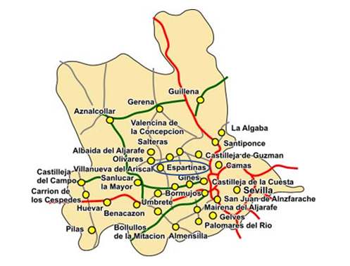

El Aljarafe
El Aljarafe es una comarca situada en la provincia de Sevilla, en Andalucía. Los 30 municipios que la componen juntan más de 390.000 habitantes, conformando la mayor aglomeración urbana del sur del país, el Área metropolitana de Sevilla
El extremo sur de la comarca se encuentra a apenas 7 km del océano Atlántico por el sur y a 112 km del estrecho de Gibraltar. El río Guadalquivir la separa de la capital andaluza, a solo 2 km por Autovía del Quinto Centenario.
Para la legislación autonómica, los siguientes municipios, ubicados en el Aljarafe, forman parte del área metropolitana de Sevilla: Albaida del Aljarafe, Almensilla, …, Espartinas, Umbrete, … y Villanueva del Ariscal.

El origen del crecimiento de la comarca se inicia en los años 1940, cuando ciudadanos de clase alta de la capital hispalense decidieron tener sus residencias en las afueras de la ciudad. Hoy en día la población del Aljarafe supone un 3,8% del total andaluz- 352.000 habitantes - y representa una cuarta parte (25,2%) de la aglomeración urbana de Sevilla. Pese a conservar una parte importante del paisaje tradicional de olivares y otros aprovechamientos agrícolas, hoy cumple una función metropolitana y residencial que ha trasformado considerablemente su imagen. Podría considerarse como una "ciudad chalet” por el predominio de este tipo de edificaciones de baja densidad, tan propio de los crecimientos suburbanos contemporáneos. El crecimiento poblacional ha hecho que gran parte de los municipios formen un espacio urbano contiguo, en el que los límites entre un municipio se difuminan.
La diferencia de altura con respecta a Sevilla capital hace de esta zona, una de las más cómodas para vivir en los meses calurosos de verano por la diferencia de temperatura que existe con respecto a Sevilla. Estas condiciones climáticas tan favorables han sido un factor importante del crecimiento de la comarca.
El Aljarafe cuenta con dotaciones propias, como hospitales (San Juan de Dios, el hospital Nisa Aljarafe), una universidad privada (CEU Andalucía), estudios de televisión, hoteles, un puerto deportivo (Puerto Gelves) y centros comerciales y grandes superficies como Ikea, Merkamueble, Makro, Carrefour, El Corte Inglés, etc., así como numerosos centros educativos.
Según un estudio de la Agencia Tributaria publicado en 2018, ocho de los diez municipios con mayor renta declarada de toda Andalucía se encuentran en el Aljarafe, a la cabeza de los cuales se encuentran Tomares y Espartinas.